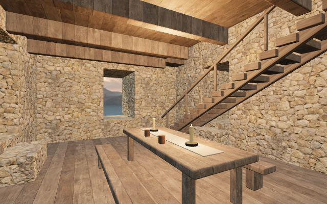
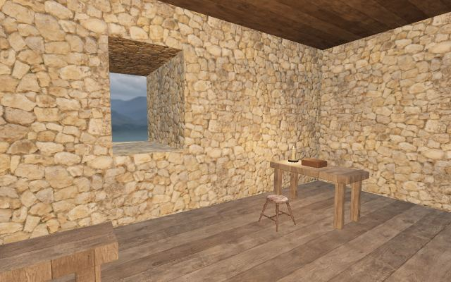
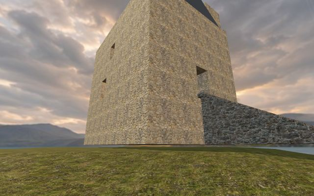
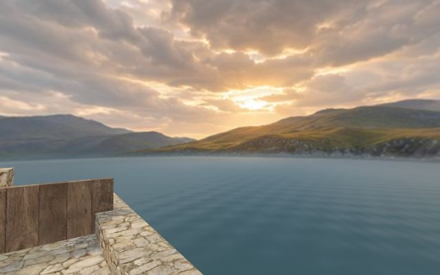

Stora salen
Två rum att upptäcka, en ö att utforska. Välj en plats och stanna så länge du vill.
En fri tolkning av Castle Stalker och dess omgivning.
Laddar slottet…
MobilVänster tumkontroll flyttar dig. Dra på resten av vyn för att titta.
DesktopWASD eller piltangenter för att gå. Dra med musen för att titta. Med ”Lås musen” räcker det att röra musen. Escape frigör den.
FlygSamma rörelsekontroller. E / Q eller ↑ / ↓ till höger ändrar höjd. ”Tillbaka” tar dig tillbaka till din förra gångposition.
Platsknapparna tar dig direkt till en säker startpunkt. Trappan längs salens västra vägg leder till kammaren.
Två rum. Ön. Utsikten. Byt plats när du vill.




Alla platser går att nå direkt. Du behöver inte kunna spelkontroller.